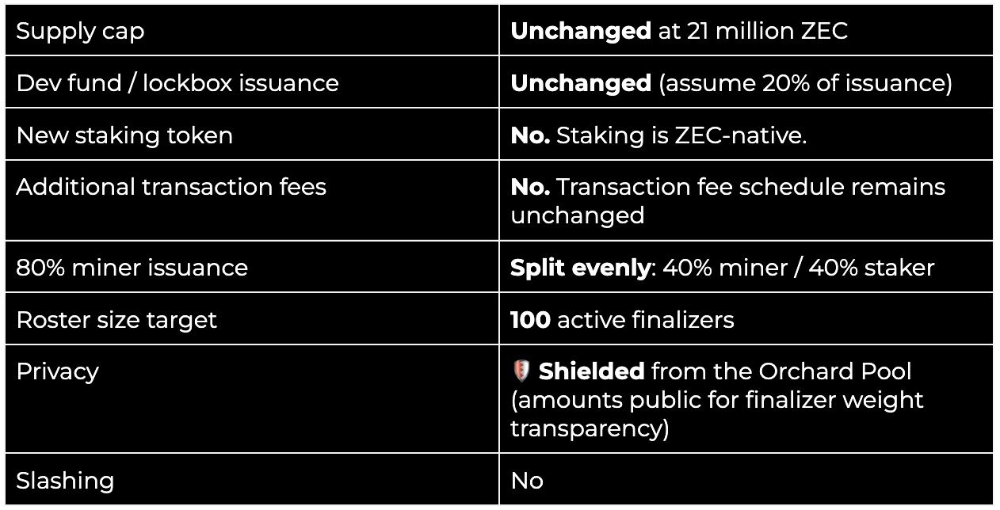
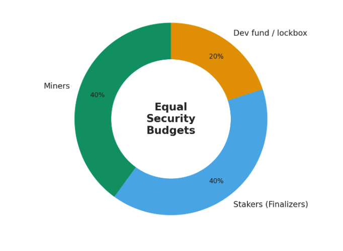
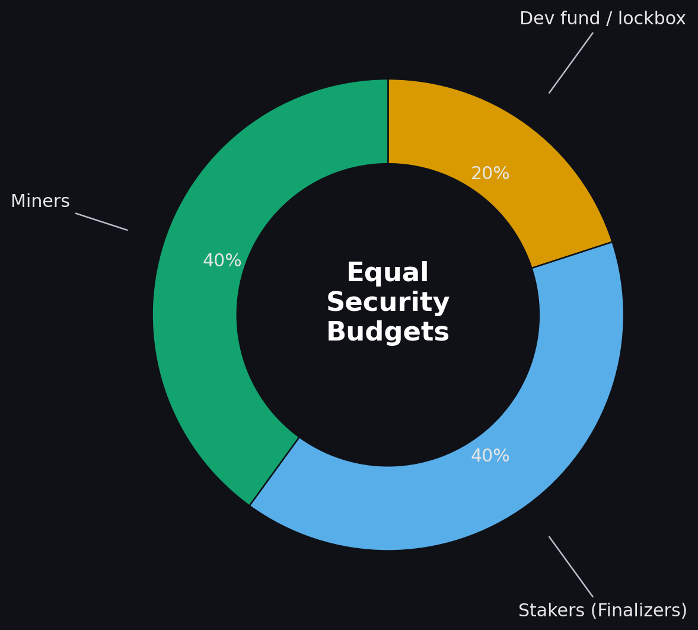

Zcash and Staking Economics

Crosslink is the beating heart of Zcash. Like the heart’s two sides pumping blood to the lungs and the rest of the body, it depends on both stakers and miners to keep the network secure and resilient. Stakers manage the roster of finalizers, ensuring the network remains highly available and protected against potential future attacks. Miners continue to secure the network by validating and adding new blocks. Each plays a distinct but equally vital role in maintaining the health and strength of Zcash.
Crosslink achieves assured finality by introducing a network of Proof-of-Stake (PoS) nodes called finalizers to the existing Proof-of-Work (PoW) network. However, we are quickly realizing that focusing on finality may miss the bigger picture because with PoS comes staking and with staking comes yield.
This post outlines Shielded Labs’ early view on staking economics. It’s an initial design for our prototype that may evolve during implementation. We’re sharing it now to keep the community informed, and to get early feedback.
Overview




Security Budget and Issuance
We believe that hybrid PoS is more secure than PoW or PoS alone because an attacker must compromise both protocols to gain full control over the network. To achieve this, the block reward should be split equally (40/40) between miners and finalizers. Otherwise, an attacker could target the cheaper vector.

Staking & Delegation
In Crosslink, staked amounts are publicly visible for transparency and accountability. The community can see the total amount staked and how much is delegated to each finalizer. To preserve privacy, staking and unstaking occur in fixed 10-day windows, with stake amounts rounded to set increments (e.g., 1, 10, 100, 1,000, 10,000 ZEC), making it harder to link transactions to individuals. A 30-day unbonding period adds further privacy and security, giving the community time to detect and respond to potential issues (such as rollback attacks) before funds are released. It also encourages participants to keep some holdings liquid within the shielded Orchard pool, helping maintain a healthy anonymity set.
Every user stakes their ZEC with one or more finalizers of their choosing, and finalizers are ranked by total stake.
A Note On Privacy
The strongest privacy comes from holding funds at rest in a shielded wallet. When you stake, you intentionally disclose certain information, such as your staked amount, so the community can monitor and hold finalizers accountable. This creates an inherent trade-off between the individual benefit of maximum privacy and the public benefit of protecting the proof of stake layer. We recommend keeping some ZEC unstaked and liquid in the Orchard pool, enough to cover anticipated spending over the next 60 days, while staking the remainder. When you want maximum privacy, you can unstake and return to holding liquid shielded funds.
Staking Lifecycle
Choose a finalizer – From your wallet UI, select a finalizer based on factors such as commission rates, voting power, and other information.
Stake in Orchard – Stake ZEC held in the shielded Orchard pool. Staked amounts to each finalizer are publicly visible, ensuring transparency around their voting weight. Staking can only be initiated during fixed 10-day batching windows, and amounts must be in set increments (e.g., 1, 10, 100, 1,000, 10,000 ZEC) to help preserve privacy.
Earn Rewards – The protocol tracks rewards as blocks are finalized but pays them out only when you unstake, calculating your total based on your full staking period. Rewards are automatically added to your stake, increasing your position size. The rate of return is variable and will adjust over time depending on how much ZEC is staked across the network. Wallets, block explorers, and dashboards can show you how much you’ve earned so far, but the protocol only pays those rewards when you unstake.
Move stake – Reallocate your stake to a different finalizer during staking windows, but the change will only take effect after the batching period.
Unstake – Submit an unstaking request during a 10-day batch window. Your ZEC then enters a fixed 30-day unbonding period before becoming spendable.
Standard transaction fees apply for staking and unstaking. We also expect finalizers to charge commissions. Individual yield, from issuance, scales with your fraction of the total stake.
Roster Design
The roster includes the top 100 stake-weighted finalizers.
Requirements
We believe that if you can run a highly-available Zebra node, then you can run a finalizer, since PoS by nature is not resource-intensive. Minimum stake is determined competitively by the current roster participants.
Roster Lifecycle
Enter the roster by running a finalizer node and staking ZEC.
Receive delegations from others and compete for roster inclusion based on stake weight.
If a node falls out of the top 100 finalizers, they are removed from the roster.
Operational Monitoring and Slashing
Staking is not an isolated, passive act. By staking, you join the community, providing a crucial service to safeguard Zcash for the benefit of everyone. Your choice of a high quality finalizer rewards them through commission fees. By moving your stake elsewhere if an operator is performing poorly or misbehaving, you can help safeguard Zcash.
There will be no automatic, protocol-level slashing in this design, so the power lies fully in the stakers’ hands to reward and censure node operators.
Call to Action
We’d like to hear your feedback on this staking design as well as ideas on possible staking UX. Join the conversation on the Zcash Community Forum.